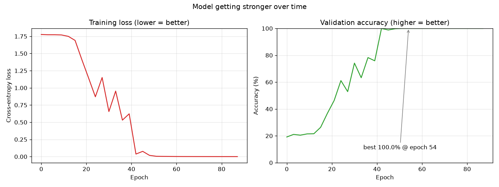

Pure-Python artificial neural network + hand-written CUDA kernels · NVIDIA RTX 3050
nnscratch is a small machine-learning framework that builds an Artificial Neural Network (ANN) entirely from scratch in plain Python — every neuron, every weight, the forward pass and the learning algorithm (backpropagation) are written by hand, with no high-level libraries doing the hard part. The heavy number-crunching (big matrix multiplications) is then pushed onto an NVIDIA GPU using custom CUDA kernels, so the network trains fast in parallel across thousands of GPU cores.
The page below shows a real trained model's predictions: every point is coloured by the class the network thinks it belongs to, on top of the model's learned decision boundary. It also reports how accurate and how confident the model is — a strong model should be both right and sure.
Background shading = the class the network predicts for every spot on the plane. Dots = data points (ringed in red if mis-classified).

Share of predictions made above each confidence level. A confident model piles up near 100%.
| # | input (x, y) | true class | predicted | probability | result |
|---|
An ANN is a computer model loosely inspired by the brain. Its basic unit is a neuron: a tiny decision-maker that takes some numbers in, multiplies each by a weight (how much it cares about that input), adds a bias (a baseline nudge), and produces one output. Stack many neurons side-by-side and you get a layer; stack layers front-to-back and you get a network, where each layer feeds the next. In this project a network is literally a Python list of layers, where each layer is a list of neuron dictionaries holding their weights.
To make a prediction, numbers flow from the input layer to the output layer. Each
neuron computes z = (weights · inputs) + bias (the linear step), then
squashes it through a non-linear activation function — here the
sigmoid 1 / (1 + e-z) for hidden layers and
softmax at the end, which turns the outputs into probabilities that sum to
100%. The class with the highest probability is the network's answer, and that
probability is its confidence.
At first the weights are random, so the guesses are wrong. We measure how wrong with a loss (cross-entropy). Then comes the clever part, backpropagation: using calculus (the chain rule) the network figures out how much each individual weight contributed to the error. Gradient descent then nudges every weight a small step in the direction that reduces the loss — like walking downhill to the lowest valley.
The most expensive operation in a neural net is matrix multiplication. On a normal CPU it's done largely one number at a time. A GPU has thousands of small cores, so we give each core one cell of the answer to compute and they all work simultaneously. This project writes those GPU programs (CUDA kernels) by hand, keeping the data on the GPU during training. On the RTX 3050 this makes the core matrix multiply roughly 2,000× faster than a naive CPU loop, and the wide-network training several times faster than optimised CPU math.
The dataset shown is an intertwined spiral — several spiral arms wound around each other. It is deliberately non-linear: no straight line can separate the classes, so the network must bend its decision boundary into spiral shapes. Watch in the plot how the coloured regions curl to follow each arm. That curved boundary is the visible proof that the network learned a genuinely non-trivial pattern — and it does so with near-certain confidence on points it gets right.